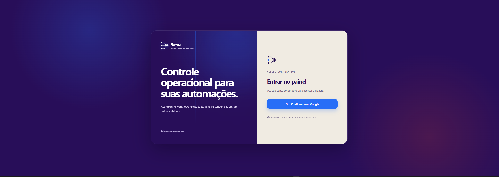

PROJETO EM DESTAQUE · AUTOMAÇÃO & INTEGRAÇÃO
Fluxora
Um centro de controle para acompanhar automações n8n com contexto, organização e uma interface dedicada à operação.

Por dentro do Fluxora
O problema
Acompanhar automações exige reunir informações sobre workflows, execuções e estados de integração em um contexto operacional compreensível.
Minha contribuição
Desenvolvimento do projeto apresentado no GitHub, combinando interface React e TypeScript com integração à API do n8n pelo servidor.
A solução
Visão geral, catálogo de workflows e histórico de execuções. As credenciais ficam no servidor; a interface trata carregamento, ausência de dados e ambiente ainda não conectado.
O que o projeto entrega
Uma interface estruturada para consumir dados reais do n8n. O funcionamento integrado depende de ambiente e credenciais configurados.